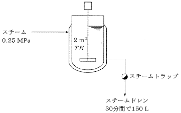

平成24年度 問35 化学プロセス
下図のように、2 m3のジャケット付撹拌槽に水温T Kの水を2 m3仕込み、0.25 MPaの飽和スチームで加熱した。ジャケットから排出されたスチームドレンは30分間で、150 Lであった。このとき、槽内の水温の上昇分として、最も近い値はどれか。
ただし、水の比熱は4,187 J kg-1 K-1、水の密度は1,000 kg m-3とする。また、圧力に対するHL（飽和水の比エンタルピー）、及びHg（飽和スチームの比エンタルピー）は下表のとおりとする。なお、槽の昇温、放熱、トラップ等での熱損失は考慮しないものとする。

| 圧力/kPa | HL/kJ kg-1 | Hg/kJ kg-1 |
|---|---|---|
| 100 | 417 | 2,675 |
| 150 | 467 | 2,693 |
| 200 | 505 | 2,706 |
| 250 | 535 | 2,717 |
| 300 | 561 | 2,725 |
①
38.4 K
②
39.1 K
③
39.8 K
④
40.5 K
⑤
41.2 K
正答
② 39.1 K
スチームがタンク内の水へ与える熱は凝縮熱、つまり蒸気から水への状態変化に伴う熱量です。比エンタルピーの差Hg-HLから求められます。
0.25 MPa（250 kPa）の飽和スチームですので、表よりHL=535 kJ kg-1、Hg＝2,717 kJ kg-1です。比エンタルピー差は2,717-535＝2,182 kJ kg-1です。
スチームドレンの量は30分間で150 L（＝0.15 m3＝150 kg）ですので、比エンタルピー差より2,182 kJ ,kg-1 × 150 kg＝327,300 kJの凝縮熱が発生したことが分かります。
タンク内の水の量は2 m3（＝2,000 L＝2,000 kg）ですので、水の比熱より4,187 J kg-1 K-1 × 2,000 kg＝8,374 kJ/Kです。つまりタンク内の水を1℃（1K）上昇させるのに8,374 kJ必要ということを意味します。
よって槽内の水温の上昇分は327,300 kJ / 8,374 kJ/K＝39.1 Kです。